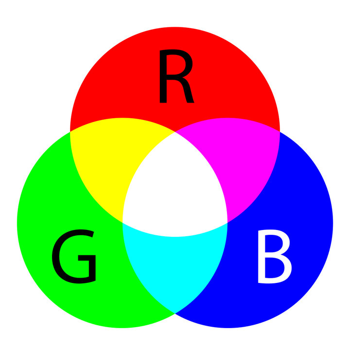

Kleurmodellen zijn een belangrijk onderdeel in de digitale wereld. Ze worden gebruikt om
kleur op je beeldscherm te brengen, maar ook in bijvoorbeeld printers. De 2 meest gebruikte
kleurmodellen zijn het RGB model en het CMY model. Het RGB model wordt toegepast op
beeldschermen. In een beeldscherm zitten heel veel kleine vierkantjes met rode, groene en
blauwe lampjes. Net zoals dat je verf kan mengen, kan je ook deze kleuren mengen tot een
andere kleur en zo een afbeelding maken.
Het CMY model wordt gebruikt in printers om kleur op papier af te kunnen drukken. Omdat
papier wit is, werkt het RGB model hier niet op. Voorderest werkt het CMY model hetzelfde
als het RGB model, kleuren mengen om zo andere kleuren te creëren. Het CMY model heeft
alleen niet de mogelijkheid om puur zwart af te drukken, en daarom is het CMYK model
uitgevonden. Hier staat de K voor black.